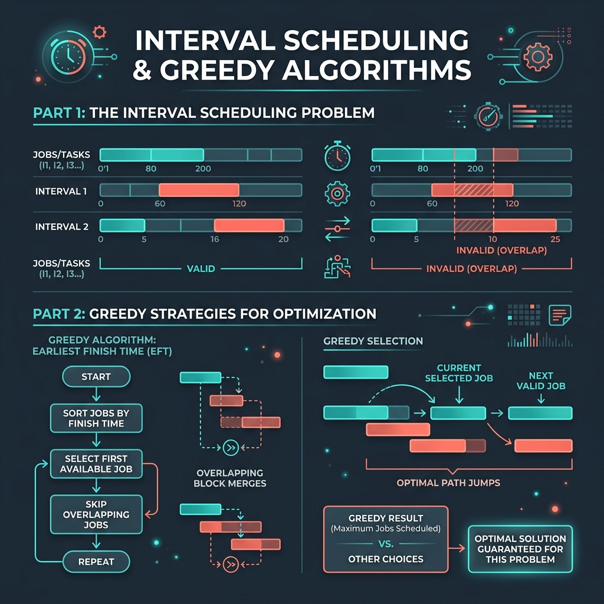

Introduction & Problem Explanation
The Gas Station problem describes a circular route containing n gas stations. Each gas station i provides a certain amount of gas: gas[i]. You have a car with an unlimited gas tank, and it costs cost[i] of gas to travel from station i to its next neighbor station (i + 1).
We start the journey with an empty tank at one of the gas stations. Our goal is to find the starting gas station's index if we can travel around the circuit once in the clockwise direction, otherwise return -1. If a solution exists, it is guaranteed to be unique.
For example:
gas = [1, 2, 3, 4, 5]cost = [3, 4, 5, 1, 2]
1+2+3+4+5 = 15, and the total cost is 3+4+5+1+2 = 15. Since total gas is equal to total cost, a solution is possible. By starting at index 3 (gas value 4), we accumulate enough fuel to navigate the route.
If we check all starting stations naively, it takes O(n2). We want to find an optimized, single-pass O(n) greedy solution.

Imagine running a circular race track with checkpoints. Each checkpoint gives you energy bars, and traveling to the next checkpoint burns calories. First, if the total calories provided by all checkpoints is less than the total calories burned to run the entire track, you can never finish—no matter where you start. Second, if you start at checkpoint A and run out of energy at checkpoint B, it means any checkpoint between A and B is also a failing starting point (since you would have arrived at those intermediate checkpoints with a surplus of energy from A, and still failed). Thus, you can skip all checkpoints between A and B and set your next trial start point to B + 1.
The Algorithmic Approach
Greedy Gas Tank Tracking (O(n) Time, O(1) Space)
We use two observations to solve this in a single loop:
- Total Net Gas Check: If the sum of all elements in
gasis less than the sum of all elements incost, the car can never complete the circuit. We return-1. - Resetting the Starting Station: We start driving from station 0 with a current tank of 0. At each station
i, we add the net gasgas[i] - cost[i]to our tank. If our tank drops below 0 at stationi, it means we cannot start at our chosenstartindex and reachi + 1. In fact, we cannot start at any station betweenstartandieither. So, we set the new potential starting station toi + 1and reset our tank to 0.
start index is guaranteed to be the correct starting position.
Step-by-Step Execution Walkthrough
Let's trace the algorithm with gas = [1, 2, 3, 4, 5] and cost = [3, 4, 5, 1, 2]:
- Step 1 (Initialization): Set
totalSurplus = 0,currentTank = 0,start = 0. - Step 2 (Index 0: gas = 1, cost = 3):
- Net:
1 - 3 = -2. - Accumulate:
totalSurplus = -2,currentTank = -2. - Since
currentTank < 0, we reset! We setstart = 1andcurrentTank = 0.
- Net:
- Step 3 (Index 1: gas = 2, cost = 4):
- Net:
2 - 4 = -2. - Accumulate:
totalSurplus = -4,currentTank = -2. - Since
currentTank < 0, reset! Setstart = 2andcurrentTank = 0.
- Net:
- Step 4 (Index 2: gas = 3, cost = 5):
- Net:
3 - 5 = -2. - Accumulate:
totalSurplus = -6,currentTank = -2. - Since
currentTank < 0, reset! Setstart = 3andcurrentTank = 0.
- Net:
- Step 5 (Index 3: gas = 4, cost = 1):
- Net:
4 - 1 = 3. - Accumulate:
totalSurplus = -3,currentTank = 3. - Since
currentTank >= 0, we proceed without resetting.
- Net:
- Step 6 (Index 4: gas = 5, cost = 2):
- Net:
5 - 2 = 3. - Accumulate:
totalSurplus = 0,currentTank = 6. - Since
currentTank >= 0, we proceed.
- Net:
- Step 7 (Final Check): The loop ends. Since
totalSurplus = 0(non-negative), the tour is possible. We returnstart = 3.
Key Code Snippets & Explanations
Here is why the main logic in the solution is important:
totalSurplus += gas[i] - cost[i];: Keeps track of the global energy balance. If it ends up negative, a full cycle is mathematically impossible.if (currentTank < 0) { start = i + 1; currentTank = 0; }: The greedy state transition. When the fuel tank goes dry, it proves all previous nodes are invalid starting candidates, so we jump our starting guess forward to the next index.
Java Implementation Code
Below is the complete, self-contained Java source code that solves this problem. It also includes a main method that traces the execution with console outputs.
package io.practise.dsa;
import java.util.Arrays;
public class GasStation {
// Greedy: Time O(N), Space O(1)
public int canCompleteCircuit(int[] gas, int[] cost) {
if (gas == null || cost == null || gas.length != cost.length) {
return -1;
}
int totalSurplus = 0;
int currentTank = 0;
int start = 0;
for (int i = 0; i < gas.length; i++) {
int net = gas[i] - cost[i];
totalSurplus += net;
currentTank += net;
// If we run out of gas, we cannot start from "start" up to "i"
if (currentTank < 0) {
start = i + 1; // Try starting from the next station
currentTank = 0; // Reset our current fuel tank
}
}
// If the total gas is less than total cost, completion is impossible
return totalSurplus < 0 ? -1 : start;
}
public static void main(String[] args) {
GasStation solver = new GasStation();
int[] gas = {1, 2, 3, 4, 5};
int[] cost = {3, 4, 5, 1, 2};
System.out.println("--- Gas Station Demonstration ---");
System.out.println("Gas values at stations: " + Arrays.toString(gas));
System.out.println("Cost to next stations: " + Arrays.toString(cost));
int startIndex = solver.canCompleteCircuit(gas, cost);
System.out.println("Optimal Starting Index: " + startIndex); // Expected: 3
}
}
Conclusion
The Gas Station problem is a beautiful example of using mathematical properties to cut search complexity. By realizing that failing at station B invalidates all stations between B and the starting candidate, we collapse a nested loop search into a single O(n) sweep.